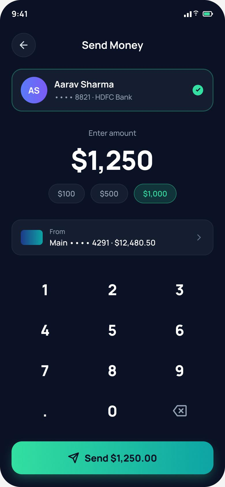

The Problem
People check their balance constantly — but rarely go deeper. Everyday banking apps bury the two things users actually want (understanding spending and sending money) under dense dashboards and multi-step flows.
In discovery I audited five leading banking apps and repeatedly saw the same pattern: home screens crammed with promotions, transfers hidden 3–4 taps deep, and spending data locked in separate reports. Users described feeling anxious and slow — not in control.
How might we help young professionals understand their money and act on it in seconds — without feeling overwhelmed?
Goals & Success Metrics
Align the design around clarity, speed and confidence — and define measurable targets to test against.
- ◎Surface what matters firstBalance, spending trend and quick actions above the fold.
- ⚡Make transfers effortlessComplete a send in under 30 seconds from the home screen.
- ✓Build trustClear recipients, confirmations and security cues at every step.
Target metrics: transfer completion < 30s · SUS score > 80 · task success > 90% · spending-insight engagement up.
User Research
A mix of qualitative and quantitative methods to understand how people actually manage money on mobile.
Key findings
- 1Balance-first, explore-neverUsers open the app daily just to glance at balance — deeper features feel like effort, so they're ignored.
- 2Transfers feel risky and slowToo many screens and unclear recipients make sending money stressful; people double-check obsessively.
- 3Spending insight is wanted but hiddenEveryone valued category breakdowns — but couldn't find them without digging into reports.
- 4Trust is emotionalConfirmation screens, security badges and seeing the recipient's name reduce anxiety more than speed alone.
Personas
Two primary personas emerged from the research and guided every design decision.
Aditya Rao
"I just want to send my share of rent and see where my money went — I don't want a finance degree."
- Split bills & transfer to friends fast
- Track subscriptions and monthly spend
- Cluttered home screens & promos
- Transfers buried behind menus
Meera Shah
"My income is different every month, so I really need to see my spending clearly to plan."
- Understand spending by category
- Feel in control of variable income
- No at-a-glance spending insight
- Anxious about sending to wrong person
User Flow — Send Money
The core flow was re-designed from ~5 screens down to a single, guided screen with a confirmation moment.
Wireframes
Low-fidelity wireframes tested the layout hierarchy before any visual design — prioritising balance, quick actions and a one-screen send.
Hi-Fi Design & Prototype
The final interface uses a focused gradient balance card, four one-tap actions, an at-a-glance weekly spend chart, and a single-screen transfer with quick-amount chips.


Key design decisions
- ◆Gradient balance cardAnchors the eye and makes the most-checked info instantly scannable.
- ◆Weekly spend chart on homeBrings the hidden insight users wanted to the surface.
- ◆One-screen send + quick amountsRemoves steps; the total is echoed on the button to reduce errors.
Usability Testing
Tested the prototype with 6 participants (moderated + unmoderated via Maze) across two core tasks.
Tasks: (1) “Find how much you spent this week.” (2) “Send $50 to Aarav.”
| Metric | Target | Result |
|---|---|---|
| Task success rate | > 90% | 92% |
| Avg. time to send money | < 30s | 22s |
| System Usability Scale (SUS) | > 80 | 86 — “excellent” |
| Error / misclick rate | Low | 1 minor |
What testing changed
Two users hesitated before confirming an amount. → Added quick-amount chips and echoed the total on the Send button for a clear final check.
Recipient selection felt uncertain. → Added an avatar + verified checkmark so users can confirm who they're paying at a glance.
Results & Impact
Reflection & Next Steps
The biggest win came from removing steps, not adding features — collapsing the transfer into one confident screen changed how the whole app felt. Testing early with low-fi wireframes saved rework later.
Next: biometric confirmation, savings-goal tracking, and shared-expense splitting for the “rent with friends” use case that surfaced repeatedly in interviews.